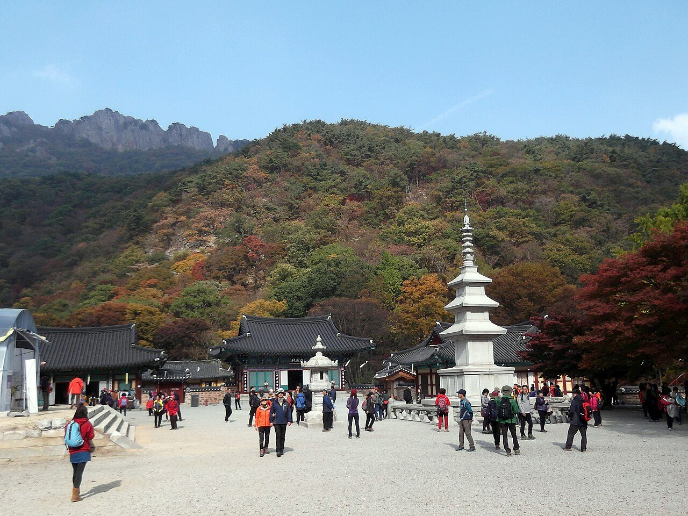
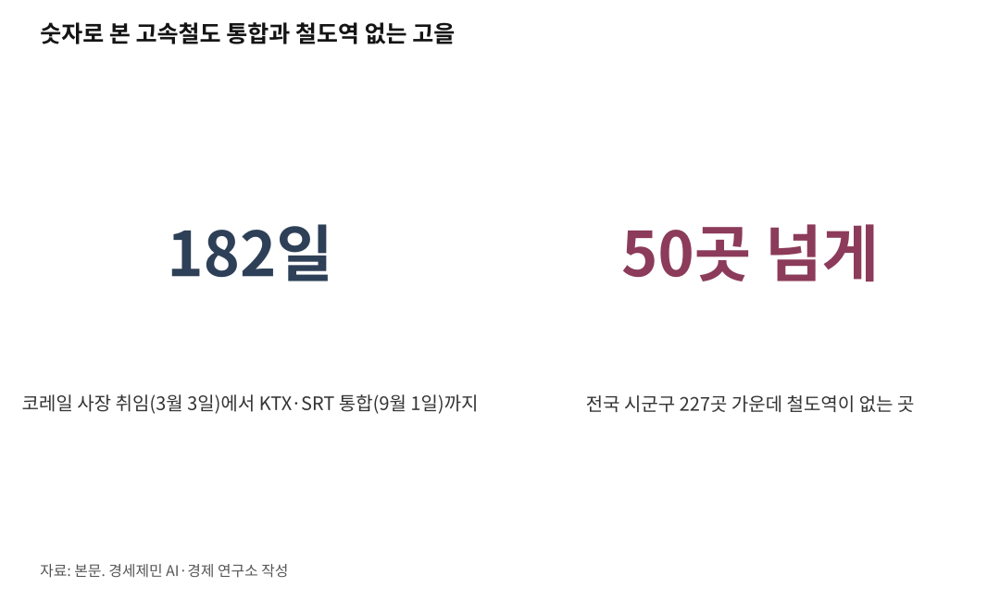

[에세이] 공부와 아부와 치부, 그리고 정읍역의 30초
AI경세제민=김갑봉 기자 | 교수님은 평소 저한테 삼부를 알려 주셨습니다. 공부와 아부와 치부입니다. 치부는 재화를 모으는 일입니다. 세상을 사는 사람이 붙들 수 있는 세 가지가 그렇다는 말씀이었습니다. 어느 것을 붙드느냐로 사람이 갈린다는 뜻으로 저는 들었습니다.

곡학아세를 두고도 솔직하게 말씀하셨습니다. 학자가 곡학아세를 하면 안 되지만 어떤 경우 곡학을 하게 될 수밖에 없는 처지가 있을 텐데 그것까지는 경우에 따라 참을 수 있다고 하셨습니다. 그러나 아세는 절대 안 된다고 하셨습니다.
곡학아세는 사기 유림열전에서 나온 말입니다. 한나라 원고생이 아흔 살에 다시 조정에 불려 나갔을 때, 함께 부름받은 젊은 공손홍이 늙은 자기를 못마땅한 눈으로 보자 이렇게 일렀다고 합니다. 힘써 바른 학문으로 말하고 학문을 굽혀 세상에 아첨하지 말라. 원고생은 굽히는 것과 아첨하는 것을 한 말로 묶어 꾸짖었는데, 교수님은 그 둘을 갈라 놓으셨습니다. 굽히는 것은 처지가 만들 수 있지만 아첨은 제가 고르는 것이라는 말씀이었다고 저는 새깁니다.
김태승 코레일 사장님입니다. 인하대 아태물류학부 교수님이시고, 제가 2019년부터 2022년까지 물류전문대학원에서 물류학을 사사한 지도교수님이십니다. 그분 제자라는 사실을 먼저 밝혀 둡니다.
교수님은 학부와 대학원에서 철도물류와 철도산업을 가르치셨습니다. 그 강의에서 늘 두 기관의 통합을 강조하셨고 근거를 경제학으로 대셨습니다. 비용함수로, 규모의 경제로, 밀도의 경제로 줄기차게 통합을 주창하셨습니다.
칠판에 적힌 것은 간단했습니다. 선로는 한 벌만 깔립니다. 두 벌 깔면 그대로 버리는 돈입니다. 그 한 벌 위에 열차를 더 넣고 사람을 더 태울수록 한 사람 나르는 값이 내려갑니다. 그런데 그 선로를 두 회사가 나눠 쓰면 그 이득이 사라집니다. 경쟁을 붙인다고 만든 구조가 실은 값을 올리고 있었다는 이야기였습니다.
철도노조가 두 기관 통합 연구에 자문을 구했을 때도 학술적으로 경제학적으로 답하셨습니다. 통합이 맞다고 하셨습니다. 노조 편을 들어서가 아니라 계산이 그렇게 나왔기 때문입니다. 반대편이 물었어도 같은 답을 하셨을 겁니다.
그래서 취임 여섯 달 만에 두 기관 통합을 이끌어 내셨습니다. 2026년 3월 3일 취임하시고 9월 1일 KTX와 SRT가 하나로 합쳐졌습니다. 그 사이가 182일입니다. 20년 넘게 강단에서 같은 답을 말해 온 사람이 그 답을 실행할 자리에 앉은 것입니다.
사무실에만 계시지 않습니다. 취임 엿새 만에 고양 정비단에서 KTX 정비 공정을 보셨고, 4월에는 영월 태백선 쌍룡역 비탈면을 드론으로 살피셨습니다. 5월에는 대전 정비단에서 무궁화호 냉방장치 정비 현황을 점검하셨고, 7월에는 남양주 공사장, 8월에는 폭염 속 오송역 선로에 가셨습니다. 안전모를 쓰고 송풍기 속을 들여다보는 사진이 그때 나왔습니다.
쉬는 날에는 남들 같으면 포클레인으로 할 일도 인력으로 밭을 가시고 삽으로 하십니다.
교수님은 평일 출장에는 회사에서 나오는 열차표가 있어서 대전에서 서울을 왕복하십니다. 주말에 대전에서 서울 집으로 오실 때는 자비로 타십니다. 그러면서 통합의 필요성이 절실했다고 하셨습니다. 표를 구하기 어려운 자리에 제 돈을 내고 서 보신 것입니다.
그 외 나머지는 직접 사비로 예매해 다니십니다. 주말에 급한 일이 생겨 상경하실 때도 사비로 기차표를 구해 다니십니다. 공무가 아니면 절대 자신의 지위를 이용하지 않으시고, 심지어 급한 공무에도 사비로 표를 끊고 예매하고 다니십니다.
한 번은 쉬는 날 자신의 누이를 정읍역에서 태워 보내는 일이 있었는데 간발의 차이로 열차를 놓쳤다고 합니다. 그래도 그 열차를 세우지 않으셨습니다. 한 1분, 한 30초면 정차해서 세울 수도 있었지만 세우지 않으셨습니다.
이제 사장님은 철도화물 활성화와 한 번 환승으로 목적지 도착 사업을 준비하고 계십니다.
국내 시군구 중에 철도역이 없는 곳이 있습니다. 제 고향 진도가 그렇습니다. 전국 227곳 가운데 쉰 곳이 넘습니다. 진도읍에 진도역을 설치해서 가장 가까운 목포역 기차 출도착 시간에 맞춰 코레일 셔틀 직통버스를 운행하는 것을 검토하신다고 했습니다. 온 국민이 고속열차를 누릴 수 있게 하고 교통의 양극화를 최소화하기 위한 조치입니다.
다른 지역도 마찬가지로 하겠다는 것입니다. 경남 창녕 등 기차역이 없는 곳에 일종의 역참을 두겠다는 것입니다. 도심공항터미널 개념으로 철도로 치면 코레일 지역터미널이고, 그 터미널에서 시외버스가 각 지역으로 다니는 것입니다. 역이 없는 고을에 역 이름을 붙이는 일이니 이름부터가 선언입니다.
준비된 사장님이셨기에 취임 여섯 달 만에 통합이 큰 홍역 없이 가능했습니다.
곡학은 경우에 따라 참을 수 있어도 아세는 절대 안 된다고 하시던 분이 지금 그 자리에 계십니다.
※ 이 기사는 AI 프로그램 클로드를 활용해 작성했습니다.
참고문헌
- Mizutani, F. & Uranishi, S., 「Does Vertical Separation Reduce Cost? An Empirical Analysis of the Rail Industry in European and East Asian OECD Countries」, Journal of Regulatory Economics 43(1), 31-59, 2013년. https://www.b.kobe-u.ac.jp/papers/2011_28
- 김동훈, "코레일 신임 사장에 김태승 인하대 교수…'정시운행보다 안전'", 비즈워치, 2026년 3월 3일. https://news.bizwatch.co.kr/article/real_estate/2026/03/03/0022
- 임호범, "김태승 제12대 코레일 사장 취임", 한국경제, 2026년 3월 3일. https://www.hankyung.com/article/202603035621h
- "김태승 코레일 사장, 오봉역 철도물류 안전 인프라 점검", 쿠키뉴스, 2026년 3월 31일. https://www.kukinews.com/article/view/kuk202603310174
- 소민호, "김태승 코레일 사장 '9월이면 철도통합…좌석 2배 는다'", 헤럴드경제, 2026년 5월 16일. https://www.heraldk.com/article/2026051619000063188
- 박상영·허남설, "12년 만에 합친 코레일-SR···3년간 KTX 10% 싼값에 탄다", 경향신문, 2026년 8월 2일. https://www.khan.co.kr/article/202608021516001
- 조시영, "KTX·SRT 통합…9월부터 호남선·전라선 좌석 대폭 확대", CBS 노컷뉴스, 2026년 8월 4일. https://nocutnews.co.kr/news/6558076
- 이수현, "코레일, 폭염 대비 선로 시설물 점검…현장 안전관리 강화", 데일리안, 2026년 8월 5일. https://m.dailian.co.kr/news/view/1674940/
사진 출처
· [대표사진] Café Bene, "Najaengsan.JPG", 위키미디어 공용, CC0, https://commons.wikimedia.org/wiki/File:Najaengsan.JPG

※ 이 기사는 인공지능을 활용해 작성했습니다.
관련기사
- [KTX-SR 통합⓵] 예견된 성공, 고속철 통합... 남은건 지주회사
- [KTX-SR 통합⓶] KTX 느는 동안, 무궁화는 36% 줄고 새 차는 2029년
- [KTX-SR 통합⓷] 화물고속기관차 등장, 서울-부산 논스톱 3시간 반
- [환황해 철도망⑧] 열차페리 1~3년, 해저터널 10년 뒤... 첫 단추는 인천신항 인입선
저작권자 © AI경세제민 무단전재 및 재배포, AI학습 및 활용 금지